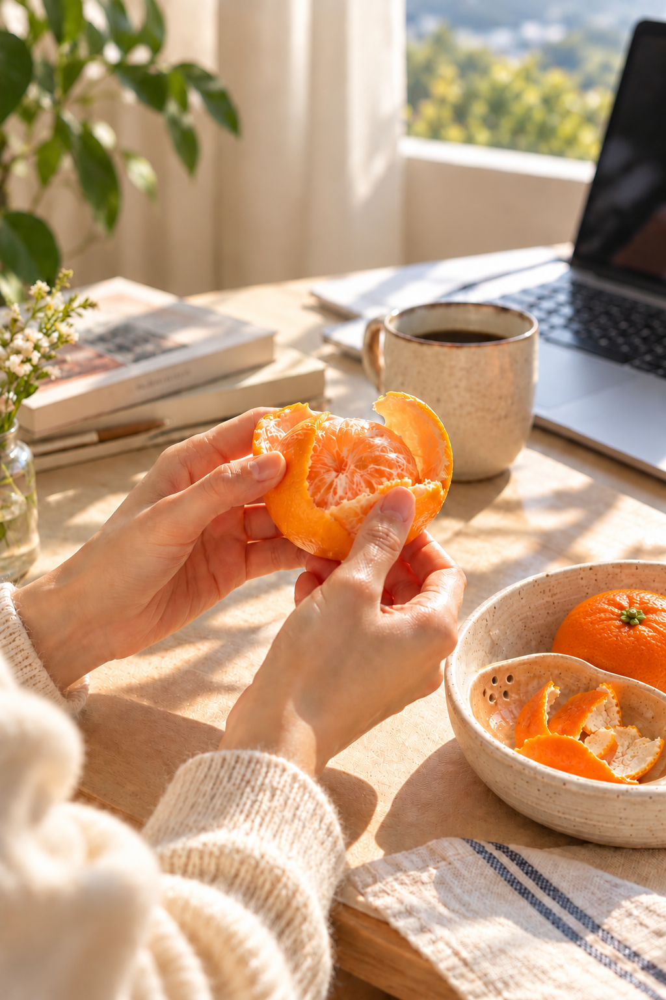
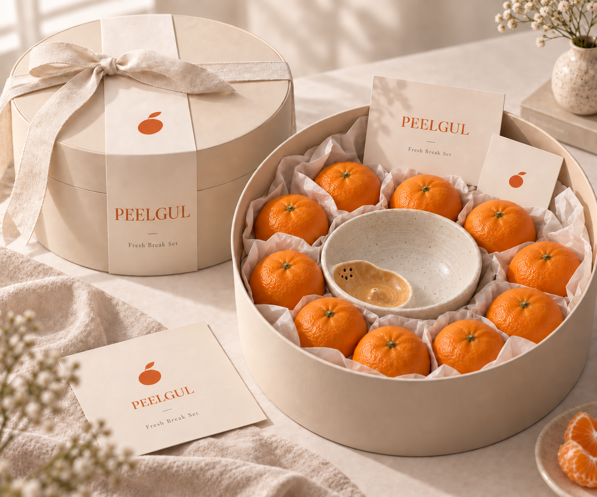

SCENT
껍질을 까는 순간 느껴지는
선명한 시트러스 향
JEJU MANDARIN RITUAL
A fresh break in your day.
하루에 더하는 산뜻한 쉼표

01 FRESH PAUSE
같은 화면, 익숙한 커피.
잠깐 리프레시가 필요한 순간이 찾아옵니다.
오래 쉬지 않아도 괜찮습니다.
“잠시 감각을 환기할
작은 틈이면 충분하니까요.”
02 WHY MANDARIN
껍질을 벗기는 손끝의 움직임,
순간적으로 퍼지는 시트러스 향,
입안을 깨우는 산뜻한 한 조각.
귤을 먹는 몇 분이
익숙한 하루의 흐름을 잠시 바꿉니다.

껍질을 벗기며
잠시 멈추고
퍼지는 시트러스 향으로
감각을 환기하고
산뜻한 한 조각으로
기분을 전환합니다.
03 THE DIFFERENCE
PEELGUL은 단순히 달기만 한 귤보다
향과 산미, 단맛의 균형이 살아 있는 감귤을 고릅니다.
껍질을 까는 순간 느껴지는
선명한 시트러스 향
산미와 단맛이 어우러지는
산뜻한 균형
손으로 바로 까서 즐기는
짧고 가벼운 Fresh Break
PEELGUL이 전하는 것은 감귤뿐 아니라,
감귤을 까는 순간에 만들어지는 작은 변화입니다.

04 FROM THE FARM
제주 표선에서
할아버지부터 아버지까지
2대째 이어온 감귤 농장.
11월부터 1월까지 직접 재배한 감귤을
숙련된 작업자들과 함께 수확하고,
아버지가 하나하나 직접 살펴 선별합니다.
05 SIGNATURE GIFT SET
PEELGUL
Fresh Break Gift Set

06 REFILL & REPEAT
첫 세트 이후에는
감귤만 편하게 리필하세요.
“시간이 지날수록
산미는 부드러워지고,
단맛은 깊어져요.”
귤 + Peel Bowl
Jeju Mandarins
Fresh Break
07 A GIFT OF PAUSE
오늘도 애쓴 나에게.
요즘 조금 지쳐 보이는 그 사람에게.

THE FRESH BREAK IS YOURS
거창한 휴식이 아니어도 괜찮습니다.
껍질을 까는 손끝,
퍼지는 시트러스 향,
산뜻한 한 조각이면 충분하니까요.
A fresh break in your day.
나의 Fresh Break 시작하기